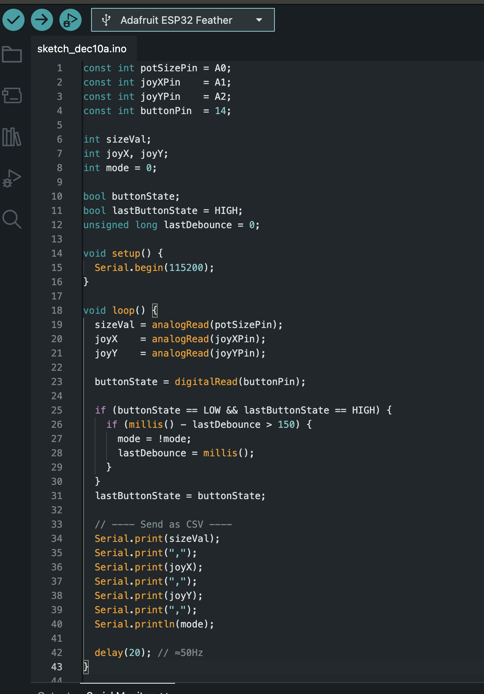
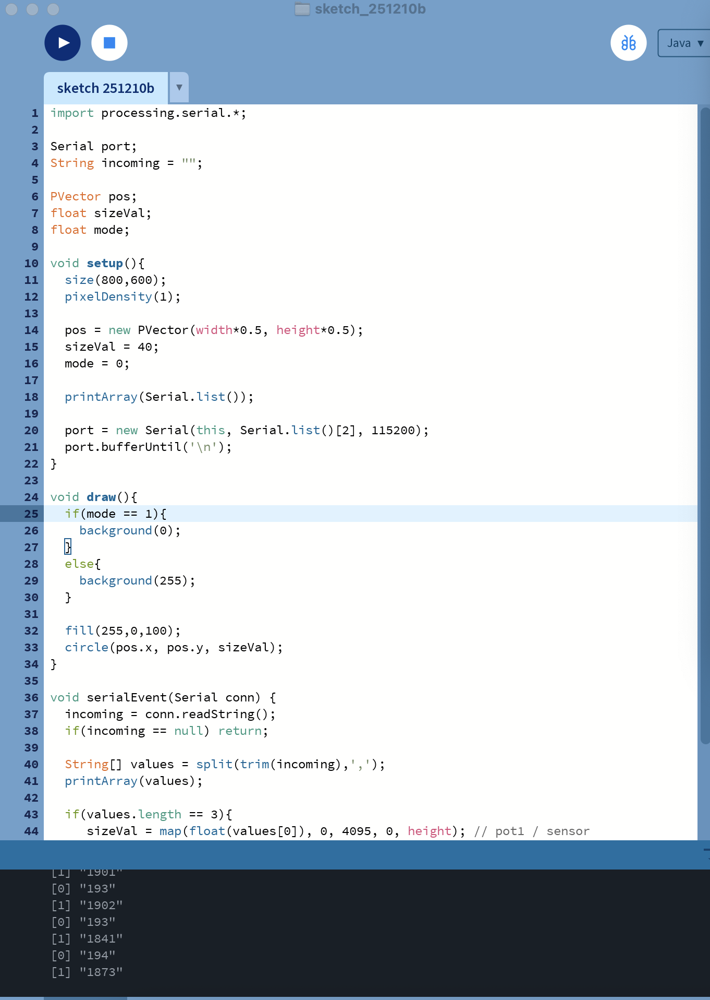
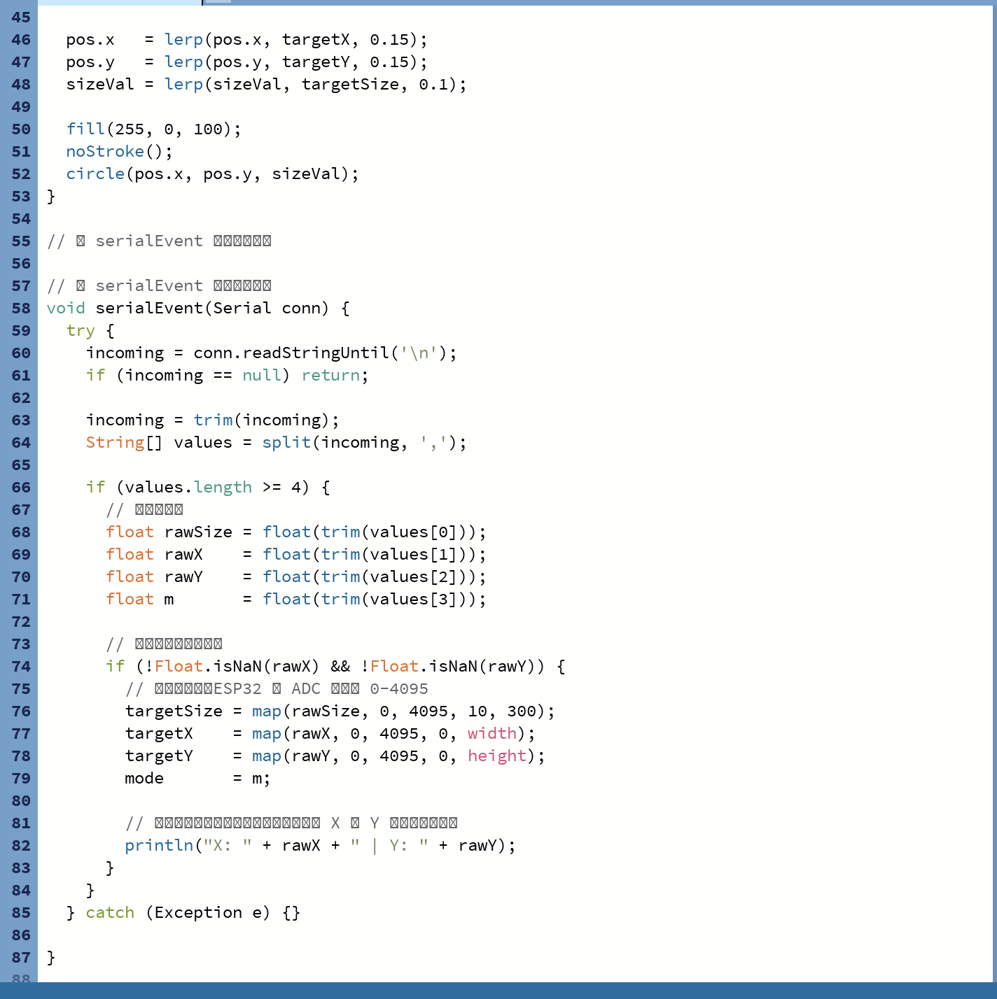
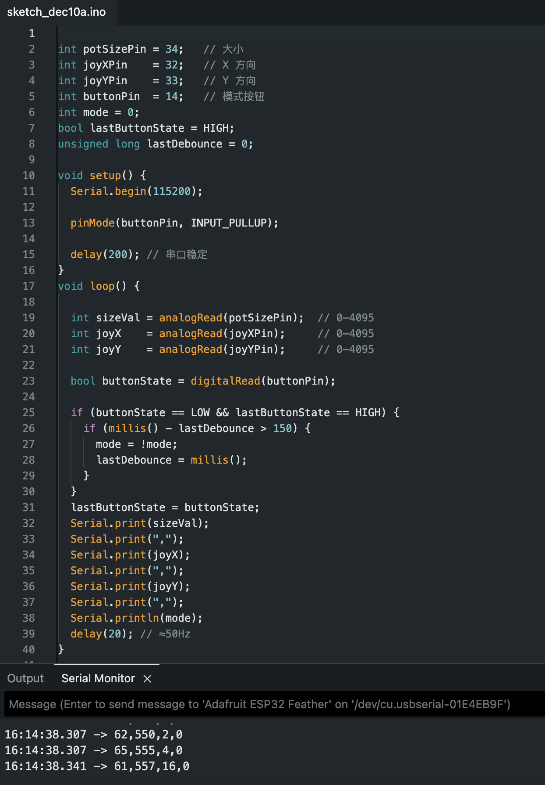
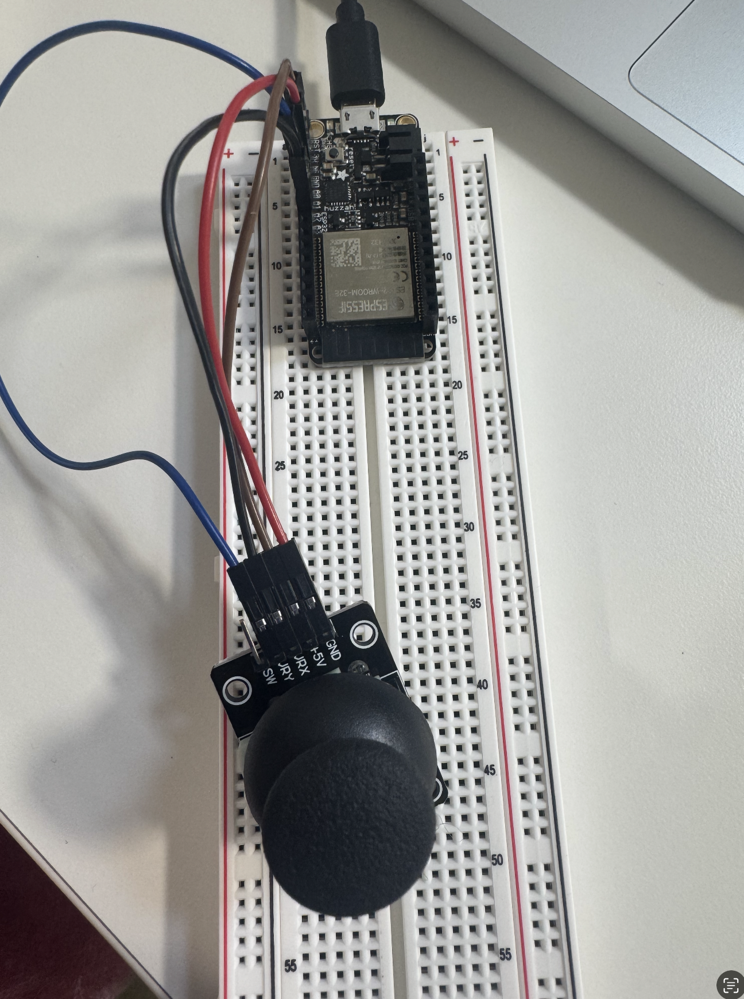

I wanted to use a joystick to control the effect we achieved in class with a potentiometer and a button. In the end, I successfully controlled the background changes, but I did not manage to control the movement of the ball. After the final class today, I realized the reasons. I followed GPT’s instructions, and the first problem was that I did not use the correct analog ports such as A0 and A1. The second problem was that I should not have used the PULLUP setting. The correct approach should have been, for example: const int joy1Y = A0; const int joy2X = A1;
At the same time, my actual wiring matched this configuration, which caused a mismatch and prevented the button from functioning properly. Now that I understand the cause, I am stopping the debugging here for the moment, because my music box is occupying the board and I really do not want to take it apart. However, I am confident that this kind of mistake will absolutely not happen again for this reason. Please forgive me, Maxim.
New code

New Try
Old Try



